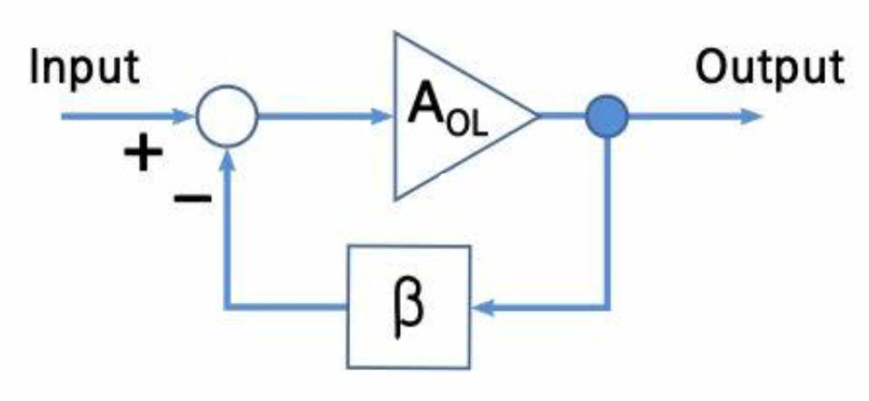
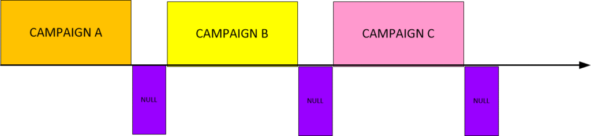
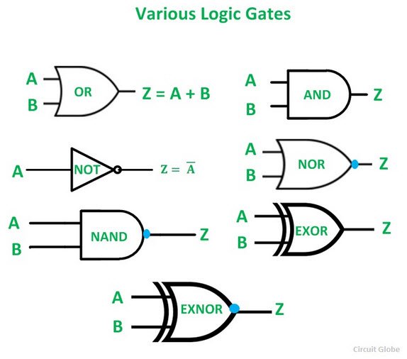
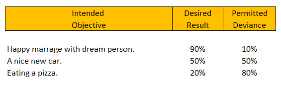
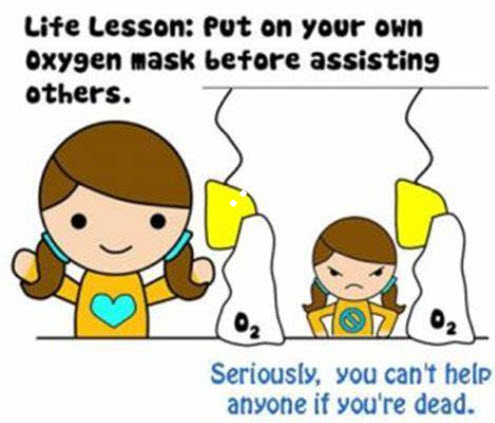

This post consists are some additional information related the conducting a “prayer campaign” for intention manifestation within the MWI.
While I have discussed this subject at length on other posts, here we will “underline” some very important aspects previously mentioned, and discuss some advanced methodology in generating the prayer / manifestation list. I hope that it is useful to you all.
Introduction
Before you all dive in this post, I want to remind everyone that the world that we have assumed is real is really quite unlike anything that mainstream science and culture thinks. It’s a universe where everything is possible, and that our reality” is a custom sphere that is controlled by our consciousness as it moves about and through other environs that it creates known as “world-lines”.
Within these spheres are all sorts of things.
Some of them are hard and fixed. Like planets, rocks, dust, and water. Some come and go as other kinds of life. Like trees, grass, birds and ants. While others have intelligence that we (as humans) can understand. Like other humans, dogs, cats and horses.
There are also other “stranger” things that are only occasionally observed. Like ghosts, spirits, oddball occurrences and coincidences.
In this “soup” of all sorts of things, our soul creates an artifice; a construct that we know as “our consciousness”. We use it to travel through this big thick “soup” and experience things. We call it “experiencing” life, and we do so over a period of “time” which is really just a long train of momentary visits in and out of different world-lines.
This movement is usually pre-determined.
That is to say, that our soul determines what we will pretty much experience in our life, and set up barriers to “fence us in” and keep on a certain “learning track”, and to prevent us from “getting into trouble”. But, you know, we don’t have to obey those “barriers”. We can go around them, climb over them or go through them. It’s all on how we utilize our thoughts and our desired intentions.
In other posts, I have emphasized that you can control the navigation of your life though these world-lines via concentrated prayer. Also known as intention. And I have clearly listed numerous techniques to do so with.
Here, in this post, we will build upon the earlier posts and go into further detail on some aspects that other people have requested clarification on.
The issues mentioned herein are derived from questions that other influencers and followers have queried via email and privately.
The Importance of “the pause”
I have mentioned that for Intentions and Prayers to work that you must engage a system of intensive prayer, followed by an equally intensive pause.
This pause is not just a mere end of praying, it is a complete shut-down of the mind in regards to that prayer campaign. You need to turn everything off and forget about it all. You just cannot go back “looking over your shoulder” ever few days to see if things are ‘working”. You must give it up and you must forget about it all.
The best campaigns are the ones where you absolutely forget your affirmation text.
Life moves on.
You go have a pizza. You hang out with friends, and then you go to work and you do your business. You mow the lawn, fix and repair the house. You do the dishes, you vacuum the car and take it to a car wash. You buy new clothes and you go to church.
Life goes on and you completely forget about your prayer campaign.
I am sure that other people who have conducted prayer campaigns would agree with me. For it to work, you must separate yourself from your intention prayer campaign and move on with your life.
This is absolutely critical.
You MUST do it.
If you do not do it, the intention prayer campaign will not engage and you will not see any results.
How long?
A minimum of three months. That is minimum. Often, I would advise between four and nine months. This is where you live your life. This is where you forget about intention and allow your brain to engage the programming that you set in place. This is where you get to relax and let things happen.
Think of yourself and you life as a wind-up toy.

The intention prayer campaign is the period where you are winding and winding up the mechanical toy.
The period of the “pause” is when you put the mechanical contrivance on the floor and press the “unwind” button. Then you just watch the toy do it’s thing…
Now…
Using that analogy.
What happens when all you do is wind up the toy? You wind and wind and wind, over and over, but never press the button?
Nothing happens!
You need to “pause” and press that “pause” button to allow those intention prayers to manifest and happen.
The length of time for the "pause" varies from person to person, as well as a function of the complexity of the prayer affirmation content. You should NEVER have a "pause" that is under a three month duration. Because what you are doing is just extending an old intention prayer campaign.
Feed-back Loop
Every six months or so, you need to review old “prayer campaigns”. This will tell you what manifested, and what has yet to manifest. It is a “feed back” loop that will tell you what you are doing right and where you need to alter or change your techniques or behaviors…
This is a very important step that you need to conduct, but you need not think about it. Just write in your calendar on a certain date to review your affirmations. Then forget about them. It is critical to forget about the affirmations in order for them to work. The brain must be allowed or permitted to “work it’s magic” and navigate the world-lines on it’s own.
So, this step is known as a “feed back loop”. It allows you to gauge the effectiveness of your prayer campaign over a certain period of time.

For the most part, you probably will not see much in the way of change in the first six months. However, after two to three years, you will absolutely be able to start “checking off” the items within your prayer campaign list.
Every six months review the status of your various prayer campaigns. Give each one a name. Like January 2019, or Get Rich II, or Campaign 12, etc. Then when you check and review the campaigns you can compare them in effectiveness over time. It will enable you to improve your campaigns, and have a better grasp of where you are now.
Cascading Intention Campaigns
There are numerous people who do not want to stop their prayer campaigns. They do not want to get out of a long-standing habit. A habit that many of them have created over the years. It is a habit where they pray every day.
The way to handle this situation is to have “cascading intention campaigns”.
How this works is simple.
Instead of a “pause” after a campaign, you start a completely (COMPLETELY) different intention prayer campaign.
- This second campaign must be absolutely different in every way from the first campaign. Nothing in this campaign must match what is in the first campaign.
- You need a small or short “pause” between the campaigns. This is a “null” prayer technique. You just pray for good will and allowances for the proper implementation of the previous campaign. In other words, your prayers during the “pause” is for your prior campaign to work perfectly.
- Your “null” prayers concentrate on the implementation of the campaign and nothing else.
It will end up looking something like this…

In general, I advise NOT to follow a cascading series of intention prayer campaigns. The point is that for those that cannot break from long standing habits, this technique is available as an alternative.
Intention ladder chains
A “ladder chain” is an engineering term that represents a sequence of events that must occur in process engineering.
For instance, if you want to fill up a tank with water, the ladder chain might look some thing like this…
Open valve A. Monitor flow of water. When water reaches 200 gallons. Close valve A. Turn on the heater. When heat reaches 80 degrees C, turn off the heater. Open valve B. When tank volume reaches 0 gallons; close valve B
This is pretty much what a “ladder chain” is.
It can get pretty complex and detailed, but I think that you get the general idea. It’s a precise list of instructions on how to do a specific task.
And thus…
Why not use that same technique to define an intention prayer?
Well, you can.
You really can.
Now, in electronics there is something called “digital electronics”. It’s a world of short electrical pulses that are either “on” or “off”. What Digital Electronics does is create a sort of ladder chains by binary interpretation of the electrical pulses.
Sort of like this…
If there is a pulse... Do A, and B, and C. Do not do D, unless C happens at the same time as D. If D lasts too long, then stop A.
That is “digital electronics”.

Well, we can do this in intention as well.
So during a prayer campaign, you can structure your verbal affirmations in such a way as to create a ladder chain. It’s a very precise way of generating your intentions. It can be very useful if you desire very specific outcomes.
For instance, you can say…
I will meet the girl of my dreams and she will fall in love with me.
And it will work.
It’s open ended enough that if you found “the girl of your dreams” that it would be more than enough for you. Who cares what she is like, or looks like, or how rich she is, because she is “the girl of your dreams.”
Right?
But, you know, maybe your dream is a nightmare. Eh?
What?
(You might ask.)
Well, you see…
Maybe that image of the “girl of your dreams” was formed by Hollywood, and you get a blonde-haired bimbo with the IQ of a snail and who has expensive tastes as well as a nasty case of STD’s.
You have to be very careful on what you pray for.
So you might want to be more specific.
And thus a ladder chain will help.
In an intention ladder chain, you end up being especially precise about what you want and what you are trying to avoid. To specify exactly what you want, and you specify exactly what you are trying to avoid.
Intention prayers are all so very personal. So rather than provide a serious example, let me provide something on the “lighter side”. Maybe something like this…
I will meet and fall in love with the girl of my dreams... But... She will not have any habits that I find repulsive. She will not have expensive tastes. She will not have stinky feet. She will have... Long, well trimmed fingernails. Long flowing brown hair, with a purple highlight. Long, long, long legs, and tiny feet. If she lives near me... She will own her own house. She will have two cars, one will be a Prius. She will love both dogs and cats. She will water her garden every day at 6:24pm. But, if she lives far from me... She will like pizza. She will enjoy tacos and nachos. She will love to give me back massages. She will be unattached, with no boyfriends, or lovers.
There are pluses and minuses in using a ladder chain within your intention.
On the plus side, because it is so specific, you will be well able to see exactly when some intention manifests.
For instance, if you intention was that your automobile possess a 5 liter engine, and suddenly you had a car accident and the only available replacement engine is 5 liter, then you know that your intention prayer works.
On the negative side, because it is so specific, it will absolutely take longer to manifest. The more complex your intention chain, the more world-lines that you must pass through and thus the longer that it will take to manifest.
Ugh!
So there are tradeoffs.
In general, I advise selective use of precise “intention ladder chains” in an “intention prayer campaign”. If you are too precise, you might miss out on many things that are “good enough”.
You see, it is really unrealistic to expect 100% perfection. There will always be imperfections in life. That is why it is called “life”. You need the imperfections to obtain experiences.
Depending on the situation, you can relax your requirements somewhat as long as your objectives are obtained.

Use of sprites and other “non-physical” entities.
A sprite is a non-physical intelligent entity. They travel world-lines just like humans do. They come in different sizes and shapes and pretty much are associated with the physical, but do not inhabit the physical world.
Some people can sense them. Many cannot.
When Newtonian physics hit the universities, all the legends and tales traditionally handed down through the ages, in just about every society, were automatically discounted as nonsense. The argument was “if I cannot see it, and measure it, it does not exist”. Now we know otherwise, and have tracked the behaviors of non-physical events to some minor effect.
These intelligent entities actually do exist.
They also can be called upon though your prayer affirmations, provided that you, yourself, have a special affinity for them.
Other names for a sprite are spirit, fairy, elf, nymph, brownie, pixie, apparition, imp, goblin, leprechaun, peri, dryad, naiad, sylph, Oceanid.
In general, sprites live their own lives and have very little to do with humans or human souls.
However, there are times when complex relationships occur between a human soul and a specific type of sprite.
Sprite - a small being, human in form, playful and having magical powers faerie, faery, fairy, fay spiritual being, supernatural being - an incorporeal being believed to have powers to affect the course of human events elf, gremlin, imp, pixie, pixy, hob, - (folklore) fairies that are somewhat mischievous brownie - a legendary good-natured elf that performs helpful services at night. gnome, dwarf - a legendary creature resembling a tiny old man; lives in the depths of the earth and guards buried treasure Puck, Robin Goodfellow - a mischievous sprite of English folklore Oberson - (Middle Ages) the king of the fairies and husband of Titania in medieval folklore Titania - (Middle Ages) the queen of the fairies in medieval folklore water spirit, water sprite, water nymph - a fairy that inhabits water
While I know very little about all of this, I do realize that it exists, and if you (for what ever reason) have some affinity to these “imaginary” entities, then you can call upon your relationship in your prayer affirmations.
In the past, I have advised those that had a very strong affinity for faeries to create a nice mediation area in their back yard. I have advised to make it something that they and any faeries that happen to be around to feel attracted to.
Yup it sounds strange, but most people live in a really strange reality that has nothing to do with the way things actually are.
The idea of cross-species familiarity with non-physical entities should not be discounted, or ridiculed.
Like physical animals (dogs, cats, horses, and birds) companions can provide mutual benefits in our day to day lives. If you are comfortable with the idea of a non-physical entity and want them / they to have a greater role in your life, crate the necessary environment and add your desires to your intention prayers.
You might be surprised that some of the “hardships” and “difficulties” of day to day life, seem to “magically ” disappear after you do this. Just like the calming effect of a beloved cat purring on your lap, or the comfort of a dog greeting you after a hard day of work, the effects of such a relationship will bring about some remarkable changes in your over all mood and emotions.
An affirmation that might improve your relationship with non-physical beings might go something like this…
- I attract friendly non-physical elves, sprites and/or related beings into my life for mutually beneficial interactions and a general improvement in all of our standard of living.
Prayer to help others / society
It is true, you can use prayer and intention to improve the world around us.
While I have focused on using intention to better one’s life, and to control your world-line travels, you can also use it to make the world a better place.
Now, one should not misunderstand. My point is that you must take care of yourself first. You must make sure that you are happy, healthy, and doing well first. Then, and only then can you worry about your close family, your loved ones and those around you. Then, when you and your family are well taken cared for, you can concentrate on others.
It is identical to what they say when you are being instructed on how to put on the air mask on a plane: put yours on first, then attend to your child.

Now, that being said, let it be well understood that you absolutely can use the power of directed intention prayer to better the world around you . In so doing you can improve the lives of yourself and others in the process. We know this as it has been shown time and time again that prayer and meditation improves the lives of those in the target area of influence…
- POWER OF PRAYER: Praying against violence – Washington Times
- Prayer that prevents crime in our cities – CSMonitor.com
- Meditating to Try to Lower Crime Rate – The New York Times
Just remember, that all your efforts are meaningless unless you take care of yourself and your needs first. So pay strict attention to this…
Conclusion
This post is simply a collection of advisement’s on how to improve your intention prayers and how to navigate through the various world-lines. It mentions various issues that have been asked of me privately and it is my hope that the information provided herein would be of use and help.
Happy navigating!
Do you all want more?
I have more posts related to this in my MAJestic Index. You can see it here…
Articles & Links
You’ll not find any big banners or popups here talking about cookies and privacy notices. There are no ads on this site (aside from the hosting ads – a necessary evil). Functionally and fundamentally, I just don’t make money off of this blog. It is NOT monetized. Finally, I don’t track you because I just don’t care to.
To go to the MAIN Index;
- You can start reading the articles by going HERE.
- You can visit the Index Page HERE to explore by article subject.
- You can also ask the author some questions. You can go HERE .
- You can find out more about the author HERE.
- If you have concerns or complaints, you can go HERE.
- If you want to make a donation, you can go HERE.
Please kindly help me out in this effort. There is a lot of effort that goes into this disclosure. I could use all the financial support that anyone could provide. Thank you very much.
[wp_paypal_payment]